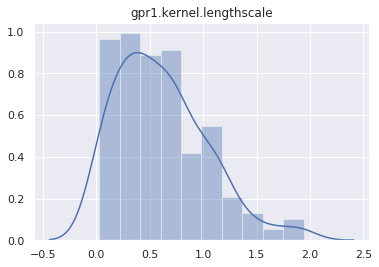

import warnings
import matplotlib.pyplot as plt
import numpy as np
import seaborn as sns; sns.set()
from scipy.cluster.vq import kmeans2
import torch
import torch.nn as nn
from torch.distributions import constraints
from torch.distributions.transforms import AffineTransform
from torchvision import transforms
import pyro
import pyro.contrib.gp as gp
import pyro.distributions as dist
from pyro.contrib.examples.util import get_data_loader
from pyro.infer import MCMC, NUTS, Predictive, SVI, TraceMeanField_ELBO
pyro.set_rng_seed(0)
warnings.formatwarning = (lambda message, category, *args, **kwargs:
"{}: {}\n".format(category.__name__, message))Inferences for Deep Gaussian Process models in Pyro
deep learning
gaussian process
pytorch
pyro
In this tutorial, I want to illustrate how to use Pyro’s Gaussian Processes module to create and train some deep Gaussian Process models. For the background on how to use this module, readers can check out some tutorials at http://pyro.ai/examples/.
The first part is a fun example to run HMC with a 2-layer regression GP models while the second part uses SVI to classify digit numbers.
HMC with Heaviside data
Let’s create a dataset from Heaviside step function.
N = 20
X = torch.rand(N)
y = (X >= 0.5).float() + torch.randn(N) * 0.05
plt.plot(X.numpy(), y.numpy(), "kx");
We will make a 2-layer regression model.
class DeepGPR(pyro.nn.PyroModule):
def __init__(self, gpr1, gpr2):
super().__init__()
self.gpr1 = gpr1
self.gpr2 = gpr2
def forward(self):
h_loc, h_var = self.gpr1.model()
self.gpr2.X = pyro.sample("h", dist.Normal(h_loc, h_var.sqrt()))
self.gpr2.model()
# mean function is used as in [3]
gpr1 = gp.models.GPRegression(X, None, gp.kernels.RBF(1), noise=torch.tensor(1e-3),
mean_function=lambda x: x)
gpr1.kernel.variance = pyro.nn.PyroSample(dist.Exponential(1))
gpr1.kernel.lengthscale = pyro.nn.PyroSample(dist.LogNormal(0.0, 1.0))
gpr2 = gp.models.GPRegression(torch.zeros(N), y, gp.kernels.RBF(1), noise=torch.tensor(1e-3))
gpr2.kernel.variance = pyro.nn.PyroSample(dist.Exponential(1))
gpr2.kernel.lengthscale = pyro.nn.PyroSample(dist.LogNormal(0.0, 1.0))
gpmodel = DeepGPR(gpr1, gpr2)Now, we run HMC to get 100 samples.
hmc_kernel = NUTS(gpmodel, max_tree_depth=5)
mcmc = MCMC(hmc_kernel, num_samples=200)
mcmc.run()Sample: 100%|██████████| 400/400 [01:14, 5.34it/s, step size=2.72e-02, acc. prob=0.933]And plot the marginal distribution of each latent site.
for name, support in mcmc.get_samples().items():
if name == "h":
continue
sns.distplot(support)
plt.title(name)
plt.show()
Let’s test if the posterior can predict the Heaviside data. The first step is to make a predictive model.
def predictive(X_new):
# this sample statement will be replaced by a posterior sample `h`
h = pyro.sample("h", dist.Normal(torch.zeros(N), 1))
gpr1.y = h
gpr2.X = h
h_new_loc, _ = gpr1(X_new)
y_loc, _ = gpr2(h_new_loc)
pyro.sample("y", dist.Delta(y_loc))We will get predictions from this predictive model by using samples from posterior.
X_test = torch.linspace(-0.5, 1.5, 300)
posterior_predictive = Predictive(predictive, mcmc.get_samples())
y_pred = posterior_predictive.get_samples(X_test)["y"].detach()
# plot 10 predictions
idx = np.random.randint(0, 100, 10)
for i in range(10):
plt.plot(X_test.numpy(), y_pred[idx[i]].numpy(), 'r-')
plt.plot(X.numpy(), y.numpy(), "kx");Unfortunately, HMC seems to not play well with this deep GP setting. I don’t know how to make it works. Probably I should use sparse GP models…
SVI with MNIST data
First, we download the MNIST data.
train_loader = get_data_loader(dataset_name='MNIST',
data_dir='~/.data',
batch_size=1000,
is_training_set=True,
shuffle=True)
test_loader = get_data_loader(dataset_name='MNIST',
data_dir='~/.data',
batch_size=1000,
is_training_set=False,
shuffle=False)downloading data
download complete.
downloading data
download complete.X = train_loader.dataset.data.reshape(-1, 784).float() / 255
y = train_loader.dataset.targetsNow, we initialize inducing points for the first layer by using k-mean of X. It is not necessary though, and taking a random subset of X also works.
Xu = torch.from_numpy(kmeans2(X.numpy(), 100, minit='points')[0])
# let's plot one of the inducing points
plt.imshow(Xu[0].reshape(28, 28));In addition, as mentioned in the section “Further Model Details” of [2], a linear mean function is required. We follow the same approach here.
class LinearT(nn.Module):
"""Linear transform and transpose"""
def __init__(self, dim_in, dim_out):
super().__init__()
self.linear = nn.Linear(dim_in, dim_out, bias=False)
def forward(self, x):
return self.linear(x).t()
# computes the weight for mean function of the first layer;
# it is PCA of X (from 784D to 30D).
_, _, V = np.linalg.svd(X.numpy(), full_matrices=False)
W = torch.from_numpy(V[:30, :])
mean_fn = LinearT(784, 30)
mean_fn.linear.weight.data = W
mean_fn.linear.weight.requires_grad_(False);Now, we create a deep GP model by stacking 2 variational sparse layers. The first layer includes a mean function (which is defined as above), while the second layer includes a multi-class likelihood. Note that inducing inputs of second layer are initialized by taking the output of mean function on inducing inputs from first layer.
class DeepGP(pyro.nn.PyroModule):
def __init__(self, X, y, Xu, mean_fn):
super(DeepGP, self).__init__()
self.layer1 = gp.models.VariationalSparseGP(
X,
None,
gp.kernels.RBF(784, variance=torch.tensor(2.), lengthscale=torch.tensor(2.)),
Xu=Xu,
likelihood=None,
mean_function=mean_fn,
latent_shape=torch.Size([30]))
# make sure that the input for next layer is batch_size x 30
h = mean_fn(X).t()
hu = mean_fn(Xu).t()
self.layer2 = gp.models.VariationalSparseGP(
h,
y,
gp.kernels.RBF(30, variance=torch.tensor(2.), lengthscale=torch.tensor(2.)),
Xu=hu,
likelihood=gp.likelihoods.MultiClass(num_classes=10),
latent_shape=torch.Size([10]))
def model(self, X, y):
self.layer1.set_data(X, None)
h_loc, h_var = self.layer1.model()
# approximate with a Monte Carlo sample (formula 15 of [1])
h = dist.Normal(h_loc, h_var.sqrt())()
self.layer2.set_data(h.t(), y)
self.layer2.model()
def guide(self, X, y):
self.layer1.guide()
self.layer2.guide()
# make prediction
def forward(self, X_new):
# because prediction is stochastic (due to Monte Carlo sample of hidden layer),
# we make 100 prediction and take the most common one (as in [4])
pred = []
for _ in range(100):
h_loc, h_var = self.layer1(X_new)
h = dist.Normal(h_loc, h_var.sqrt())()
f_loc, f_var = self.layer2(h.t())
pred.append(f_loc.argmax(dim=0))
return torch.stack(pred).mode(dim=0)[0]During early iterations of training process, we want to play more weight on mean function, which is PCA of the input, and reduce the effect of the first layer’s kernel. To achieve that, we’ll force the inducing outputs of the first layer to be small by setting small initial u_scale_tril.
deepgp = DeepGP(X, y, Xu, mean_fn)
deepgp.layer1.u_scale_tril = deepgp.layer1.u_scale_tril * 1e-5
deepgp.cuda()
optimizer = torch.optim.Adam(deepgp.parameters(), lr=0.01)
loss_fn = TraceMeanField_ELBO().differentiable_lossNow, we make some utitilies to train and test our model, just like other PyTorch models.
def train(train_loader, gpmodule, optimizer, loss_fn, epoch):
for batch_idx, (data, target) in enumerate(train_loader):
data, target = data.cuda(), target.cuda()
data = data.reshape(-1, 784)
optimizer.zero_grad()
loss = loss_fn(gpmodule.model, gpmodule.guide, data, target)
loss.backward()
optimizer.step()
idx = batch_idx + 1
if idx % 10 == 0:
print("Train Epoch: {:2d} [{:5d}/{} ({:2.0f}%)]\tLoss: {:.6f}"
.format(epoch, idx * len(data), len(train_loader.dataset),
100. * idx / len(train_loader), loss))
def test(test_loader, gpmodule):
correct = 0
for data, target in test_loader:
data, target = data.cuda(), target.cuda()
data = data.reshape(-1, 784)
pred = gpmodule(data)
# compare prediction and target to count accuaracy
correct += pred.eq(target).long().cpu().sum().item()
print("\nTest set: Accuracy: {}/{} ({:.2f}%)\n"
.format(correct, len(test_loader.dataset), 100. * correct / len(test_loader.dataset)))Here I just run 20 steps to illustrate the process.
for i in range(20):
train(train_loader, deepgp, optimizer, loss_fn, i)
with torch.no_grad():
test(test_loader, deepgp)UserWarning: linear.weight was not registered in the param store because requires_grad=FalseTrain Epoch: 0 [10000/60000 (17%)] Loss: 212735.531250
Train Epoch: 0 [20000/60000 (33%)] Loss: 210797.875000
Train Epoch: 0 [30000/60000 (50%)] Loss: 198544.937500
Train Epoch: 0 [40000/60000 (67%)] Loss: 188923.781250
Train Epoch: 0 [50000/60000 (83%)] Loss: 173786.343750
Train Epoch: 0 [60000/60000 (100%)] Loss: 141733.687500
Test set: Accuracy: 8561/10000 (85.61%)
Train Epoch: 1 [10000/60000 (17%)] Loss: 97287.031250
Train Epoch: 1 [20000/60000 (33%)] Loss: 70768.703125
Train Epoch: 1 [30000/60000 (50%)] Loss: 57853.875000
Train Epoch: 1 [40000/60000 (67%)] Loss: 52993.148438
Train Epoch: 1 [50000/60000 (83%)] Loss: 50858.843750
Train Epoch: 1 [60000/60000 (100%)] Loss: 46951.226562
Test set: Accuracy: 9367/10000 (93.67%)
Train Epoch: 2 [10000/60000 (17%)] Loss: 48359.058594
Train Epoch: 2 [20000/60000 (33%)] Loss: 47204.945312
Train Epoch: 2 [30000/60000 (50%)] Loss: 46667.531250
Train Epoch: 2 [40000/60000 (67%)] Loss: 45861.250000
Train Epoch: 2 [50000/60000 (83%)] Loss: 44377.960938
Train Epoch: 2 [60000/60000 (100%)] Loss: 42872.648438
Test set: Accuracy: 9452/10000 (94.52%)
Train Epoch: 3 [10000/60000 (17%)] Loss: 43718.472656
Train Epoch: 3 [20000/60000 (33%)] Loss: 42701.117188
Train Epoch: 3 [30000/60000 (50%)] Loss: 42110.710938
Train Epoch: 3 [40000/60000 (67%)] Loss: 39179.777344
Train Epoch: 3 [50000/60000 (83%)] Loss: 42138.128906
Train Epoch: 3 [60000/60000 (100%)] Loss: 39298.703125
Test set: Accuracy: 9522/10000 (95.22%)
Train Epoch: 4 [10000/60000 (17%)] Loss: 37643.851562
Train Epoch: 4 [20000/60000 (33%)] Loss: 37684.792969
Train Epoch: 4 [30000/60000 (50%)] Loss: 37512.687500
Train Epoch: 4 [40000/60000 (67%)] Loss: 35796.890625
Train Epoch: 4 [50000/60000 (83%)] Loss: 39870.976562
Train Epoch: 4 [60000/60000 (100%)] Loss: 38538.500000
Test set: Accuracy: 9559/10000 (95.59%)
Train Epoch: 5 [10000/60000 (17%)] Loss: 35679.082031
Train Epoch: 5 [20000/60000 (33%)] Loss: 34451.484375
Train Epoch: 5 [30000/60000 (50%)] Loss: 34536.820312
Train Epoch: 5 [40000/60000 (67%)] Loss: 34720.652344
Train Epoch: 5 [50000/60000 (83%)] Loss: 35523.476562
Train Epoch: 5 [60000/60000 (100%)] Loss: 34996.195312
Test set: Accuracy: 9587/10000 (95.87%)
Train Epoch: 6 [10000/60000 (17%)] Loss: 32602.664062
Train Epoch: 6 [20000/60000 (33%)] Loss: 32038.414062
Train Epoch: 6 [30000/60000 (50%)] Loss: 32766.855469
Train Epoch: 6 [40000/60000 (67%)] Loss: 31712.023438
Train Epoch: 6 [50000/60000 (83%)] Loss: 32820.464844
Train Epoch: 6 [60000/60000 (100%)] Loss: 30860.464844
Test set: Accuracy: 9605/10000 (96.05%)
Train Epoch: 7 [10000/60000 (17%)] Loss: 33453.183594
Train Epoch: 7 [20000/60000 (33%)] Loss: 29956.320312
Train Epoch: 7 [30000/60000 (50%)] Loss: 30775.042969
Train Epoch: 7 [40000/60000 (67%)] Loss: 30294.603516
Train Epoch: 7 [50000/60000 (83%)] Loss: 30889.650391
Train Epoch: 7 [60000/60000 (100%)] Loss: 32131.339844
Test set: Accuracy: 9614/10000 (96.14%)
Train Epoch: 8 [10000/60000 (17%)] Loss: 31358.939453
Train Epoch: 8 [20000/60000 (33%)] Loss: 28076.316406
Train Epoch: 8 [30000/60000 (50%)] Loss: 28632.076172
Train Epoch: 8 [40000/60000 (67%)] Loss: 27690.781250
Train Epoch: 8 [50000/60000 (83%)] Loss: 26535.878906
Train Epoch: 8 [60000/60000 (100%)] Loss: 27562.824219
Test set: Accuracy: 9634/10000 (96.34%)
Train Epoch: 9 [10000/60000 (17%)] Loss: 28282.326172
Train Epoch: 9 [20000/60000 (33%)] Loss: 29352.490234
Train Epoch: 9 [30000/60000 (50%)] Loss: 24757.939453
Train Epoch: 9 [40000/60000 (67%)] Loss: 25494.769531
Train Epoch: 9 [50000/60000 (83%)] Loss: 25824.050781
Train Epoch: 9 [60000/60000 (100%)] Loss: 22999.310547
Test set: Accuracy: 9658/10000 (96.58%)
Train Epoch: 10 [10000/60000 (17%)] Loss: 23991.023438
Train Epoch: 10 [20000/60000 (33%)] Loss: 24084.507812
Train Epoch: 10 [30000/60000 (50%)] Loss: 24464.601562
Train Epoch: 10 [40000/60000 (67%)] Loss: 22447.724609
Train Epoch: 10 [50000/60000 (83%)] Loss: 19856.837891
Train Epoch: 10 [60000/60000 (100%)] Loss: 23963.990234
Test set: Accuracy: 9649/10000 (96.49%)
Train Epoch: 11 [10000/60000 (17%)] Loss: 22738.152344
Train Epoch: 11 [20000/60000 (33%)] Loss: 19739.845703
Train Epoch: 11 [30000/60000 (50%)] Loss: 21024.250000
Train Epoch: 11 [40000/60000 (67%)] Loss: 20558.265625
Train Epoch: 11 [50000/60000 (83%)] Loss: 21118.412109
Train Epoch: 11 [60000/60000 (100%)] Loss: 21540.863281
Test set: Accuracy: 9657/10000 (96.57%)
Train Epoch: 12 [10000/60000 (17%)] Loss: 21006.828125
Train Epoch: 12 [20000/60000 (33%)] Loss: 19925.472656
Train Epoch: 12 [30000/60000 (50%)] Loss: 19322.695312
Train Epoch: 12 [40000/60000 (67%)] Loss: 19545.306641
Train Epoch: 12 [50000/60000 (83%)] Loss: 18559.328125
Train Epoch: 12 [60000/60000 (100%)] Loss: 18406.792969
Test set: Accuracy: 9662/10000 (96.62%)
Train Epoch: 13 [10000/60000 (17%)] Loss: 18448.007812
Train Epoch: 13 [20000/60000 (33%)] Loss: 19414.882812
Train Epoch: 13 [30000/60000 (50%)] Loss: 15840.240234
Train Epoch: 13 [40000/60000 (67%)] Loss: 16599.394531
Train Epoch: 13 [50000/60000 (83%)] Loss: 16958.341797
Train Epoch: 13 [60000/60000 (100%)] Loss: 18603.949219
Test set: Accuracy: 9682/10000 (96.82%)
Train Epoch: 14 [10000/60000 (17%)] Loss: 16310.580078
Train Epoch: 14 [20000/60000 (33%)] Loss: 16222.394531
Train Epoch: 14 [30000/60000 (50%)] Loss: 17020.830078
Train Epoch: 14 [40000/60000 (67%)] Loss: 16931.587891
Train Epoch: 14 [50000/60000 (83%)] Loss: 15865.208008
Train Epoch: 14 [60000/60000 (100%)] Loss: 16413.251953
Test set: Accuracy: 9686/10000 (96.86%)
Train Epoch: 15 [10000/60000 (17%)] Loss: 15973.184570
Train Epoch: 15 [20000/60000 (33%)] Loss: 14486.261719
Train Epoch: 15 [30000/60000 (50%)] Loss: 16237.924805
Train Epoch: 15 [40000/60000 (67%)] Loss: 14279.332031
Train Epoch: 15 [50000/60000 (83%)] Loss: 16170.495117
Train Epoch: 15 [60000/60000 (100%)] Loss: 15592.309570
Test set: Accuracy: 9691/10000 (96.91%)
Train Epoch: 16 [10000/60000 (17%)] Loss: 13618.917969
Train Epoch: 16 [20000/60000 (33%)] Loss: 14135.177734
Train Epoch: 16 [30000/60000 (50%)] Loss: 13871.028320
Train Epoch: 16 [40000/60000 (67%)] Loss: 14454.966797
Train Epoch: 16 [50000/60000 (83%)] Loss: 15427.101562
Train Epoch: 16 [60000/60000 (100%)] Loss: 13461.818359
Test set: Accuracy: 9684/10000 (96.84%)
Train Epoch: 17 [10000/60000 (17%)] Loss: 13845.273438
Train Epoch: 17 [20000/60000 (33%)] Loss: 14617.742188
Train Epoch: 17 [30000/60000 (50%)] Loss: 13943.509766
Train Epoch: 17 [40000/60000 (67%)] Loss: 14690.369141
Train Epoch: 17 [50000/60000 (83%)] Loss: 16039.636719
Train Epoch: 17 [60000/60000 (100%)] Loss: 14275.579102
Test set: Accuracy: 9693/10000 (96.93%)
Train Epoch: 18 [10000/60000 (17%)] Loss: 13436.442383
Train Epoch: 18 [20000/60000 (33%)] Loss: 15688.101562
Train Epoch: 18 [30000/60000 (50%)] Loss: 15190.672852
Train Epoch: 18 [40000/60000 (67%)] Loss: 15058.431641
Train Epoch: 18 [50000/60000 (83%)] Loss: 14980.768555
Train Epoch: 18 [60000/60000 (100%)] Loss: 12926.894531
Test set: Accuracy: 9690/10000 (96.90%)
Train Epoch: 19 [10000/60000 (17%)] Loss: 14068.406250
Train Epoch: 19 [20000/60000 (33%)] Loss: 14795.143555
Train Epoch: 19 [30000/60000 (50%)] Loss: 13799.461914
Train Epoch: 19 [40000/60000 (67%)] Loss: 14706.441406
Train Epoch: 19 [50000/60000 (83%)] Loss: 13907.800781
Train Epoch: 19 [60000/60000 (100%)] Loss: 15816.891602
Test set: Accuracy: 9707/10000 (97.07%)
In [4], the authors run 2-layer Deep GP for more than 300 epochs and achieve 97,94% accuaracy. Despite that stacking many layers can improve performance of Gaussian Processes, it seems to me that following the line of deep kernels is a more reliable approach. Kernels, which are usually underrated, are indeed the core of Gaussian Processes. As demonstrated in Pyro’s Deep Kernel Learning example, we can achieve a state-of-the-art result without having to tuning hyperparameters or using many tricks as in the above example (e.g. fixing a linear mean function, reducing the kernel effect of the first layer).
References
[1] MCMC for Variationally Sparse Gaussian Processes arxiv
James Hensman, Alexander G. de G. Matthews, Maurizio Filippone, Zoubin Ghahramani
[2] Doubly Stochastic Variational Inference for Deep Gaussian Processes arxiv
Hugh Salimbeni, Marc Peter Deisenroth
[3] https://github.com/ICL-SML/Doubly-Stochastic-DGP/blob/master/demos/demo_step_function.ipynb
[4] https://github.com/ICL-SML/Doubly-Stochastic-DGP/blob/master/demos/demo_mnist.ipynb